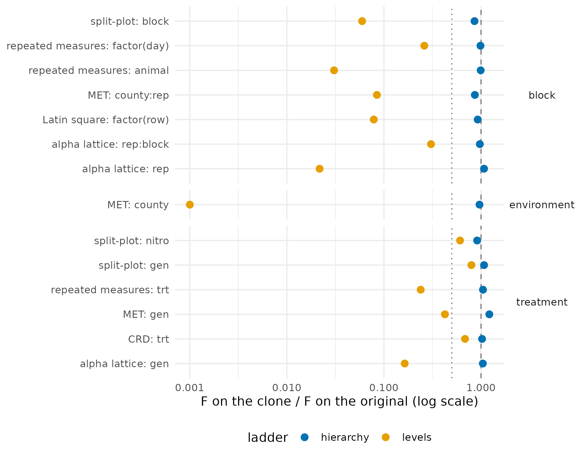

What a conditional clone keeps of the design
Source:vignettes/design_preservation.Rmd
design_preservation.RmdWhy
A biometrician developing a yield model on a synthetic clone of a multi-environment variety trial needs to know which parts of the experiment are still in the clone. The allocation (every design column and the treatment labels) is returned as it was, and the outcomes are re-simulated. What matters is whether a model fitted on those outcomes still finds the treatment, block and environment effects.
This vignette checks eight design classes, with a public exemplar of
each from the agridat package. Each is masked as a
conditional clone twenty times, the model the design calls for is fitted
on the original and on every clone, and one pass rule is applied to all
eight.
What
mask(conditional = TRUE) re-simulates the numeric block
through a Gaussian copula fitted within each treatment-by-design
stratum. When a stratum holds fewer than five rows, design columns are
dropped from it one at a time, each drop a rung of a ladder, until every
cell is large enough; rows still in cells that are too small at the last
rung are pooled into one fallback stratum. Two ladders are
available.
The default, ladder = "hierarchy", drops plot
coordinates first, then blocking columns, then environment columns, so a
county is never dropped before the replicates inside it. Each dropped
column, and each pair of dropped blocking or environment columns, is
carried into the clone as an additive shift, and rows in the fallback
stratum keep the treatment means the same way. A level with a single row
is pooled with the other singletons before any effect is estimated, so
no row’s own outcome is carried. A term that is noise is shrunk to
nothing; a strong one is carried in full. On the recipe,
conditioning_used is the stratum kept,
conditioning_dropped the columns dropped and
conditioning_shifted the terms carried as shifts.
ladder = "levels" reproduces clones made with masque
0.11.1 to 0.12.0: it drops the column with the most distinct values
first and keeps nothing of a dropped column.
The pass rule
For each design, over twenty seeds:
- Allocation. Every treatment and design column is byte-identical to the original in every clone.
- NA mask. The outcome’s missing cells are the same cells in every clone.
- Blocking and environment terms. For each such term the original can detect (F at or above 2), the median F over the clones is at least half the original’s.
- Treatment. Over the treatment levels with two or more plots, the median correlation between the clone’s level means and the original’s is at least 0.7 when the original detects the treatment (F at or above 2); a two-level treatment keeps the same top level in most seeds; and the spread of the level means stays within a factor of two of the original in every case.
The same rule runs in the package’s tests on three seeds, and on twenty when the tests are run off CRAN.
Do
The eight designs
design_specs <- function() {
augmented <- agridat::kling.augmented[, c("block", "gen", "tsw", "row", "col")]
n_gen <- table(augmented$gen)
augmented$check <- factor(ifelse(
n_gen[as.character(augmented$gen)] > 1L, as.character(augmented$gen), "new"
))
rcbd <- agridat::besag.elbatan
rcbd$block <- factor(rcbd$col)
list(
CRD = list(
data = agridat::cochran.crd, outcome = "inf", treatment = "trt",
design = c("row", "col"),
formula = inf ~ trt, terms = c(trt = "treatment")
),
RCBD = list(
data = rcbd, outcome = "yield", treatment = "gen",
design = c("block", "row", "col"),
formula = yield ~ block + gen,
terms = c(block = "block", gen = "treatment")
),
`Latin square` = list(
data = agridat::fisher.latin, outcome = "yield", treatment = "trt",
design = c("row", "col"),
formula = yield ~ factor(row) + factor(col) + trt,
terms = c(`factor(row)` = "block", `factor(col)` = "block",
trt = "treatment")
),
`split-plot` = list(
data = agridat::yates.oats[, c("block", "row", "col", "gen", "nitro", "yield")],
outcome = "yield", treatment = c("gen", "nitro"),
design = c("block", "row", "col"),
formula = yield ~ block + gen * nitro,
terms = c(block = "block", gen = "treatment", nitro = "treatment")
),
`alpha lattice` = list(
data = agridat::john.alpha[, c("rep", "block", "gen", "yield", "row", "col")],
outcome = "yield", treatment = "gen",
design = c("rep", "block", "row", "col"),
formula = yield ~ rep + rep:block + gen,
terms = c(rep = "block", `rep:block` = "block", gen = "treatment")
),
augmented = list(
data = augmented, outcome = "tsw", treatment = c("gen", "check"),
design = c("block", "row", "col"),
formula = tsw ~ block + check,
terms = c(block = "block", check = "treatment")
),
MET = list(
data = agridat::besag.met, outcome = "yield", treatment = "gen",
design = c("county", "rep", "block", "row", "col"),
formula = yield ~ county + county:rep + gen,
terms = c(county = "environment", `county:rep` = "block",
gen = "treatment")
),
`repeated measures` = list(
data = agridat::kenward.cattle, outcome = "weight", treatment = "trt",
design = c("animal", "day"),
formula = weight ~ trt + animal + factor(day),
terms = c(trt = "treatment", animal = "block", `factor(day)` = "block")
)
)
}The augmented design is analysed the classical way: the replicated
checks are fixed levels and every unreplicated entry is one class,
new. A clone cannot carry an unreplicated entry’s own
value, so only the checks and the new class are
compared.
The RCBD exemplar records its three complete blocks as the column of the field; the block factor is made from it and the column kept as a coordinate.
Masking and measuring
The roles are the ones a custodian would set: the outcome, the treatment columns kept as they are, and every design column kept as it is. Local mode keeps the treatment labels, so the allocation check is a byte comparison.
design_roles <- function(spec) {
r <- propose_roles(spec$data, mode = "local", detect = FALSE)
r <- set_role(r, spec$outcome, role = "outcome")
r <- set_role(r, spec$treatment, role = "treatment", action = "keep")
set_role(r, spec$design, role = "design", action = "keep")
}
level_means <- function(d, col, outcome) {
tab <- table(d[[col]])
m <- tapply(d[[outcome]], d[[col]], mean, na.rm = TRUE)
m[names(tab)[tab >= 2L]]
}
design_run <- function(spec, seeds, ladder = "hierarchy") {
d <- spec$data
r <- design_roles(spec)
f_orig <- anova(lm(spec$formula, data = d))
terms <- names(spec$terms)
alloc <- c(spec$treatment, spec$design)
per_seed <- lapply(seeds, function(s) {
m <- suppressWarnings(
mask(d, r, mode = "local", seed = s, conditional = TRUE, ladder = ladder)
)
sy <- as.data.frame(synthetic(m))
f_clone <- anova(lm(spec$formula, data = sy))
trt <- t(vapply(spec$treatment, function(tc) {
mo <- level_means(d, tc, spec$outcome)
ms <- level_means(sy, tc, spec$outcome)[names(mo)]
c(
corr = if (length(mo) > 2L) cor(mo, ms) else NA_real_,
ratio = sd(ms) / sd(mo),
order = as.numeric(identical(names(which.max(mo)), names(which.max(ms))))
)
}, numeric(3)))
list(
alloc = all(vapply(alloc, function(cn) identical(sy[[cn]], d[[cn]]), logical(1))),
na = identical(is.na(sy[[spec$outcome]]), is.na(d[[spec$outcome]])),
F = setNames(f_clone[terms, "F value"], terms),
trt = trt,
used = paste(recipe(m)@conditioning_used, collapse = " x "),
shifted = paste(recipe(m)@conditioning_shifted, collapse = ", ")
)
})
F_clone <- do.call(rbind, lapply(per_seed, `[[`, "F"))
trt <- simplify2array(lapply(per_seed, `[[`, "trt"))
list(
n = nrow(d),
F_orig = setNames(f_orig[terms, "F value"], terms),
F_clone = apply(F_clone, 2, median),
alloc = all(vapply(per_seed, `[[`, logical(1), "alloc")),
na = all(vapply(per_seed, `[[`, logical(1), "na")),
trt_corr = apply(trt[, "corr", , drop = FALSE], 1, median),
trt_ratio = apply(trt[, "ratio", , drop = FALSE], 1, median),
trt_order = apply(trt[, "order", , drop = FALSE], 1, mean),
used = per_seed[[1]]$used,
shifted = per_seed[[1]]$shifted
)
}
design_verdict <- function(spec, res, f_floor = 0.5, corr_floor = 0.7) {
kind <- spec$terms
block_terms <- names(kind)[kind != "treatment"]
block_ok <- vapply(block_terms, function(tm) {
res$F_orig[[tm]] < 2 || res$F_clone[[tm]] >= f_floor * res$F_orig[[tm]]
}, logical(1))
trt_detected <- any(res$F_orig[names(kind)[kind == "treatment"]] >= 2)
trt_ok <- vapply(seq_along(spec$treatment), function(i) {
corr <- res$trt_corr[[i]]
signal <- if (is.na(corr)) res$trt_order[[i]] > 0.5 else corr >= corr_floor
(signal || !trt_detected) && res$trt_ratio[[i]] >= 0.5 && res$trt_ratio[[i]] <= 2
}, logical(1))
c(allocation = res$alloc, na_mask = res$na,
blocking = all(block_ok), treatment = all(trt_ok))
}The table
verdicts <- t(mapply(design_verdict, specs, runs))
summary_tbl <- data.frame(
design = names(specs),
rows = vapply(runs, `[[`, numeric(1), "n"),
stratum = vapply(runs, `[[`, character(1), "used"),
carried = vapply(runs, `[[`, character(1), "shifted"),
allocation = verdicts[, "allocation"],
na_mask = verdicts[, "na_mask"],
blocking = verdicts[, "blocking"],
treatment = verdicts[, "treatment"],
verdict = ifelse(rowSums(!verdicts) == 0, "pass", "fail"),
row.names = NULL
)
knitr::kable(summary_tbl)| design | rows | stratum | carried | allocation | na_mask | blocking | treatment | verdict |
|---|---|---|---|---|---|---|---|---|
| CRD | 32 | trt | col, row, trt | TRUE | TRUE | TRUE | TRUE | pass |
| RCBD | 150 | gen | row, col, block, gen | TRUE | TRUE | TRUE | TRUE | pass |
| Latin square | 25 | trt | row, col | TRUE | TRUE | TRUE | TRUE | pass |
| split-plot | 72 | gen x nitro | row, col, block | TRUE | TRUE | TRUE | TRUE | pass |
| alpha lattice | 72 | gen | block, rep, gen, block:rep | TRUE | TRUE | TRUE | TRUE | pass |
| augmented | 68 | gen x check | col, row, block, gen, check | TRUE | TRUE | TRUE | TRUE | pass |
| MET | 1188 | gen | row, col, block, rep, county, block:rep, block:county, rep:county | TRUE | TRUE | TRUE | TRUE | pass |
| repeated measures | 660 | trt x day | animal | TRUE | TRUE | TRUE | TRUE | pass |
term_tbl <- do.call(rbind, lapply(names(specs), function(nm) {
data.frame(
design = nm,
term = names(specs[[nm]]$terms),
kind = unname(specs[[nm]]$terms),
F_original = round(runs[[nm]]$F_orig, 2),
F_levels = round(runs_levels[[nm]]$F_clone, 2),
F_hierarchy = round(runs[[nm]]$F_clone, 2),
row.names = NULL
)
}))
knitr::kable(term_tbl)| design | term | kind | F_original | F_levels | F_hierarchy |
|---|---|---|---|---|---|
| CRD | trt | treatment | 3.61 | 2.47 | 3.70 |
| RCBD | block | block | 1.13 | 1.28 | 0.88 |
| RCBD | gen | treatment | 1.81 | 0.96 | 2.12 |
| Latin square | factor(row) | block | 7.25 | 0.57 | 6.70 |
| Latin square | factor(col) | block | 1.20 | 0.88 | 0.93 |
| Latin square | trt | treatment | 0.56 | 0.98 | 1.25 |
| split-plot | block | block | 13.25 | 0.79 | 11.35 |
| split-plot | gen | treatment | 3.73 | 2.97 | 4.01 |
| split-plot | nitro | treatment | 81.52 | 49.56 | 74.33 |
| alpha lattice | rep | block | 36.76 | 0.80 | 39.48 |
| alpha lattice | rep:block | block | 2.88 | 0.88 | 2.80 |
| alpha lattice | gen | treatment | 7.33 | 1.20 | 7.65 |
| augmented | block | block | 0.73 | 0.84 | 0.73 |
| augmented | check | treatment | 0.39 | 1.37 | 1.64 |
| MET | county | environment | 987.12 | 0.99 | 952.10 |
| MET | county:rep | block | 32.72 | 2.77 | 28.27 |
| MET | gen | treatment | 4.05 | 1.72 | 4.93 |
| repeated measures | trt | treatment | 6.73 | 1.61 | 7.05 |
| repeated measures | animal | block | 33.94 | 1.04 | 33.67 |
| repeated measures | factor(day) | block | 1251.12 | 325.87 | 1234.89 |
trt_tbl <- do.call(rbind, lapply(names(specs), function(nm) {
data.frame(
design = nm,
treatment = specs[[nm]]$treatment,
corr_levels = round(runs_levels[[nm]]$trt_corr, 2),
corr_hierarchy = round(runs[[nm]]$trt_corr, 2),
spread_ratio = round(runs[[nm]]$trt_ratio, 2),
row.names = NULL
)
}))
knitr::kable(trt_tbl)| design | treatment | corr_levels | corr_hierarchy | spread_ratio |
|---|---|---|---|---|
| CRD | trt | 0.35 | 0.98 | 1.01 |
| RCBD | gen | -0.05 | 0.89 | 1.03 |
| Latin square | trt | 0.45 | 0.64 | 1.41 |
| split-plot | gen | 0.95 | 0.98 | 1.09 |
| split-plot | nitro | 0.98 | 0.99 | 1.02 |
| alpha lattice | gen | 0.04 | 0.93 | 1.06 |
| augmented | gen | 0.88 | 0.81 | 1.64 |
| augmented | check | 0.84 | 0.82 | 1.72 |
| MET | gen | 0.68 | 0.90 | 1.12 |
| repeated measures | trt | NA | NA | 1.01 |
Figure: the F statistic per term, clone against original
plot_df <- rbind(
data.frame(term_tbl[, c("design", "term", "kind")], ladder = "levels",
ratio = term_tbl$F_levels / term_tbl$F_original),
data.frame(term_tbl[, c("design", "term", "kind")], ladder = "hierarchy",
ratio = term_tbl$F_hierarchy / term_tbl$F_original)
)
plot_df <- plot_df[term_tbl$F_original >= 2, ]
plot_df$label <- paste(plot_df$design, plot_df$term, sep = ": ")
ggplot2::ggplot(plot_df, ggplot2::aes(x = ratio, y = label, colour = ladder)) +
ggplot2::geom_vline(xintercept = 1, linetype = "dashed", colour = "grey50") +
ggplot2::geom_vline(xintercept = 0.5, linetype = "dotted", colour = "grey50") +
ggplot2::geom_point(size = 2.5) +
ggplot2::scale_x_log10() +
ggplot2::scale_colour_manual(values = c(levels = "#E69F00", hierarchy = "#0072B2")) +
ggplot2::facet_grid(kind ~ ., scales = "free_y", space = "free_y") +
ggplot2::labs(x = "F on the clone / F on the original (log scale)", y = NULL) +
ggplot2::theme_minimal() +
ggplot2::theme(
legend.position = "bottom",
strip.text.y = ggplot2::element_text(angle = 0)
)
F statistic of each model term on the clone as a share of the original, median over twenty seeds, by ladder. Points on the dashed line are terms the clone reproduces exactly; the dotted line is the pass floor of one half. The levels ladder loses most of every blocking and environment term; the hierarchy ladder keeps them.
Read
All 8 of the 8 designs pass the rule under the hierarchy ladder. The allocation and the NA mask come back identical in every clone of every design, under both ladders. The ladder decides what a model finds.
The multi-environment trial is the case the hierarchy ladder was
built for. Its county effect has an F of 987 on the original; the levels
ladder drops county before rep, and the
clone’s county F is 1. The hierarchy ladder conditions on genotype alone
and carries the plot coordinates, county, rep,
block and their pairs as shifts; the clone’s county F is
952, the nested county:rep term is at 28.3 against 32.7,
and the genotype means correlate at 0.9 with the original (0.68 under
the levels ladder).
Yates’ oats shows the same thing on a single trial: the block F is 0.8 under the levels ladder and 11.3 under the hierarchy ladder, against 13.2 on the original, while the nitrogen response is kept by both.
The alpha lattice and the RCBD are three-replicate variety trials, and there the treatment-only rung is itself below the floor of five rows: every row is pooled. Under the levels ladder that clone is the marginal clone, with a genotype correlation near zero; under the hierarchy ladder the genotype means are carried as a shift and the correlation is 0.93 on the lattice and 0.89 on the RCBD.
The augmented design is the one where the rule has the least to say: its block and check terms are not detectable on the original (F below 2), so only the allocation, the NA mask and the spread of the treatment means are tested. The clone does not, and cannot, carry the unreplicated entries’ values.
Limits
The rule tests fixed-effects F statistics from lm(). A
split-plot or a repeated-measures analysis would normally use a mixed
model with the right error strata; the F ratios here compare the same
fixed-effects model on both sides and say nothing about variance
components. The treatment check compares level means over replicated
levels, so it does not see a treatment-by-environment interaction, which
the clone does not preserve: the copula is fitted within the stratum the
ladder reached, and once county has been dropped the
genotype-by-county pattern is gone. What the clone carries of a dropped
column is an additive main effect, shrunk toward zero when the column
explains little; a spatial trend recorded only as row and column numbers
is carried as row and column means, not as a surface. The floors in the
rule (half the original F, a correlation of 0.7, a spread within a
factor of two) are the tolerances this vignette states, not properties
of the method; tighten them and re-run the chunk for a stricter
test.
What to read next
Confidentiality and the threat model explains what carrying
a level mean into the clone means for disclosure, and why
conditional = TRUE is a statement about what the clone
reproduces. Getting started with masque is the custodian’s path
from a table to a synthetic and a recipe.
Reproduce
set.seed(1) is set once for the document; every
mask() call passes its own seed, one to
twenty, so each clone is reproducible on its own. Package versions
follow.
sessionInfo()
#> R version 4.6.1 (2026-06-24)
#> Platform: x86_64-pc-linux-gnu
#> Running under: Ubuntu 24.04.5 LTS
#>
#> Matrix products: default
#> BLAS: /usr/lib/x86_64-linux-gnu/openblas-pthread/libblas.so.3
#> LAPACK: /usr/lib/x86_64-linux-gnu/openblas-pthread/libopenblasp-r0.3.26.so; LAPACK version 3.12.0
#>
#> locale:
#> [1] LC_CTYPE=C.UTF-8 LC_NUMERIC=C LC_TIME=C.UTF-8 LC_COLLATE=C.UTF-8
#> [5] LC_MONETARY=C.UTF-8 LC_MESSAGES=C.UTF-8 LC_PAPER=C.UTF-8 LC_NAME=C
#> [9] LC_ADDRESS=C LC_TELEPHONE=C LC_MEASUREMENT=C.UTF-8 LC_IDENTIFICATION=C
#>
#> time zone: UTC
#> tzcode source: system (glibc)
#>
#> attached base packages:
#> [1] stats graphics grDevices utils datasets methods base
#>
#> other attached packages:
#> [1] masque_0.14.0
#>
#> loaded via a namespace (and not attached):
#> [1] vctrs_0.7.3 cli_3.6.6 knitr_1.52 rlang_1.3.0 xfun_0.61
#> [6] otel_0.2.0 S7_0.2.2 textshaping_1.0.5 jsonlite_2.0.0 glue_1.8.1
#> [11] htmltools_0.5.9 ragg_1.5.2 sass_0.4.10 scales_1.4.0 rmarkdown_2.32
#> [16] grid_4.6.1 tibble_3.3.1 evaluate_1.0.5 jquerylib_0.1.4 fastmap_1.2.0
#> [21] yaml_2.3.12 lifecycle_1.0.5 compiler_4.6.1 RColorBrewer_1.1-3 fs_2.1.0
#> [26] pkgconfig_2.0.3 farver_2.1.2 systemfonts_1.3.2 digest_0.6.39 R6_2.6.1
#> [31] pillar_1.11.1 magrittr_2.0.5 bslib_0.12.0 withr_3.0.3 tools_4.6.1
#> [36] gtable_0.3.6 agridat_1.26 pkgdown_2.2.1 ggplot2_4.0.3 cachem_1.1.0
#> [41] desc_1.4.3